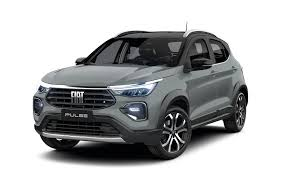

O seguro automotivo, também conhecido apenas como seguro auto, é outra possibilidade popular no mercado brasileiro. Como o nome sugere, ele é voltado para proteger veículos automotores. Além de carros, essa alternativa pode servir para proteger motos e caminhões, por exemplo.
Em geral, existe a cobrança de uma franquia, que exige o pagamento de um valor por parte do segurado, em caso de sinistro. Já as coberturas variam entre cada apólice. Contudo, esses seguros costumam apresentar proteção nas seguintes condições:

O que o seguro cobre?